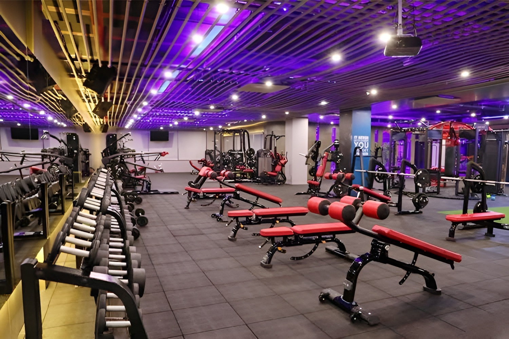

About Us
Welcome to Fitness Fifty Fifty
where we believe that achieving your best self is not just about hitting the gym, but also about nurturing your mental and physical well-being through a balanced approach. We understand the importance of a harmonious blend between exercise and diet, and we're here to guide you on your journey to achieving the perfect fifty-fifty balance for a healthier you.
The 50% Focus on Exercise - Nurturing Your Physical Well-being Physical fitness is the cornerstone of a healthy lifestyle. At Fitness Fifty Fifty, we emphasize the significance of regular exercise for a strong, resilient body. Engaging in physical activity not only enhances your physical appearance but also contributes to overall well-being. Whether you prefer cardio, strength training, yoga, or any other form of exercise, our platform provides valuable insights, tips, and workout routines to help you get started and stay motivated. We understand that finding the time and motivation to exercise can be challenging. That's why we offer customizable workout plans that fit your schedule and fitness goals. Our experts are here to guide you through proper techniques and advise on suitable workouts for all fitness levels, ensuring that you get the most out of your physical activity.
The 50% Focus on Diet - Fueling Your Body for Success Achieving a balance between exercise and diet is essential for optimal health. Your body is like a high-performance machine, and the fuel you provide plays a crucial role in its performance. At Fitness Fifty Fifty, we promote the idea that what you eat is just as important as how you move. Our nutrition experts will guide you through the maze of dietary choices, offering insights into the benefits of a balanced diet. We provide tips on portion control, meal planning, and selecting nutritious foods that support your fitness goals. Discover recipes that are not only delicious but also contribute to your overall well-being. 
Your First Home is Your Body
Fitness Fifty Fifty encourages you to view your body as your first home. It's the only place you have to live for your entire life, so it deserves the best care possible. We advocate for mindfulness about your physical and mental health, emphasizing the importance of self-care and self-love. Your well-being is the foundation upon which you can build a successful, fulfilling life.
In conclusion, Fitness Fifty Fifty is your go-to resource for achieving a balanced, healthy lifestyle. We believe that dedicating fifty percent of your efforts to exercise and fifty percent to your diet is the key to unlocking your full potential. Remember, your body is your first home; treat it with the respect and care it deserves.
Join us on this journey towards a healthier, happier you. Let's find that perfect fifty-fifty balance together and make your fitness goals a reality. Start today and embark on a path to a more vibrant, energized, and balanced life.